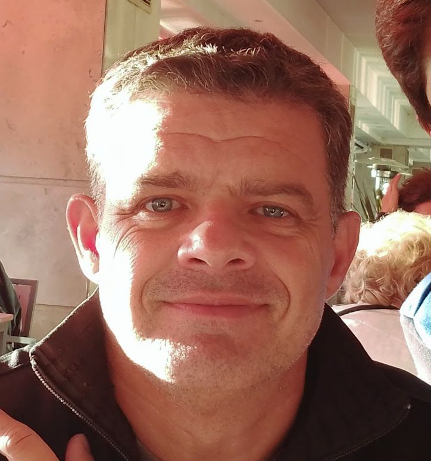
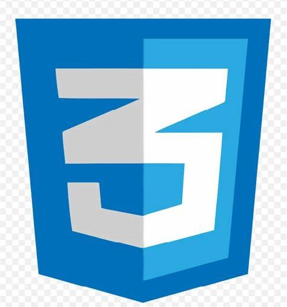
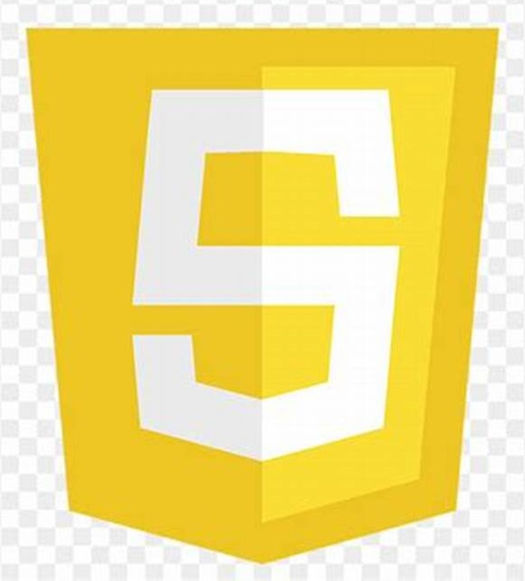
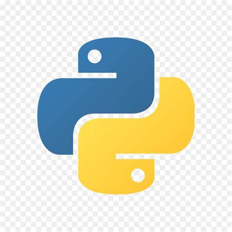

Christian Ariel Gil
Sobre Mi:

Go top
Programador Full Stack
Técnico en Prótesis Dental
Como Programador, desarrollo apps y páginas web. Y cuento con experiencia en docencia de niños y adultos en IT.
Como Técnico en Protesis, brindo soporte a los odontologos con la generación de prótesis dentales desde mi propio laboratorio dental.
Go top
Historial Académico:
Buenos Aires Ciudad, Programa "Codo a codo 4.0"
Programador Full Stack Python | 2022
Universidad de Buenos Aires.
Facultad de Medicina, hasta 2do año.
Instituto F. Makaroff, Universidad de Lomas de Zamora
Técnico en protesis dental |2002
Escuela Normal Nac.Sup. de Profesorado Almafuerte
Bachiller con orientación pedagógica| 1990
Go top
Lenguajes De Programación:
HTML5

CSS

Java Script

Python
Java